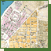
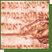
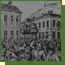

| 1783 | Measures concerning the Jewish people | |
| 1829 | The Orczy House in Pest | |
| 1837 |  | Terézváros, the Jewish quarter of Pest |
| 1838 |  | Flood board in Hebrew from Óbuda |
| 1840 | The Law of 1840 | |
| 1848– 1849 |
Dr. Zsigmond Kunewalder | |
| 1848– 1849 |
 | The pogrom in Pozsony (Pressburg, Bratislava) |
| 1867 | Emancipation | |